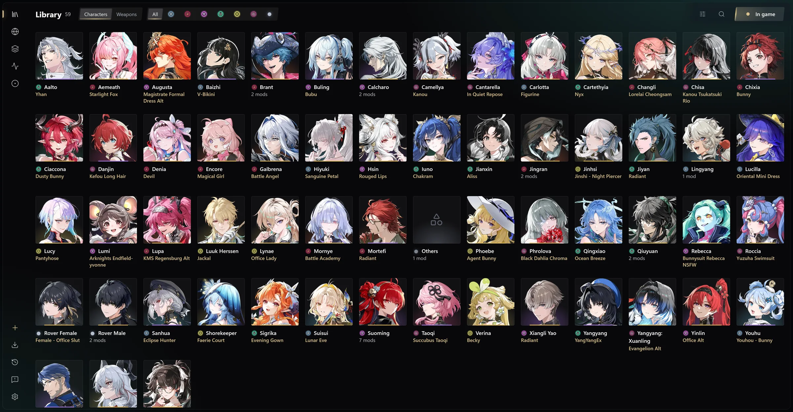

Guides
Learn Timbre and Overtone.
One task each, written for players who have read nothing else.
Start here
Getting started
Install Timbre, add your first mod and see it in Wuthering Waves.
- Install Timbre
- Choose your mods folder
- Add a mod
- Play
- Check it works

Play with mods
From your first mod to a whole library
Coming from WWMI
What changes when you move from WWMI and the XXMI Launcher to Overtone and Timbre, what carries over, and how to keep both.
ExplanationPlay with Overtone
Start Wuthering Waves with your mods, from Timbre or without it, see your changes as you save, the overlay and every in-game key, other tools beside Overtone, and removing it.
How-toAdd your mods
Add WWMI mods through Timbre: from GameBanana, from an archive or folder, copied in by hand, or a whole XXMI library, and keep them up to date.
How-toMix outfits and loadouts
Wear several mods on one character, take pieces from different outfits, and save what you wear as loadouts you can put back on in game.
How-toShare a mod
Send a mod to a friend from Timbre as a picture or a code, add one you are sent, and see how it is kept private.
How-toTimbre on a Mac or Linux
Install Timbre on a Mac or on Linux and manage your mods there, for a library you play from a Windows PC.
How-toMake mods
Dump, reshape, paint and describe
How to create a mod
Dump a character from the game, reshape her in Blender, and give her switches and textures of your own.
How-toEdit a mod in Blender
Edit a dump or any mod Timbre added in Blender: reshape it, add pieces, bring in meshes from other mods or WWMI-Tools, hide parts, and see every save in game; and how it compares with WWMI-Tools.
How-toPaint a mod's textures
Paint on a character in Timbre: tattoos, freckles, recolours and repairs, in layers that never touch the mod's own textures, seen in game as you work.
How-toWrite a description
What a mod's description, overtone.mod.toml, is, and every key it takes: switches, looks, conditions, parts, textures, materials and their shaders, layers, pieces, hidden parts, meshes and sliders.
When something's wrong
By what you see
No guide matches that. Try fewer words, or ask on Discord.
Still stuck?
Ask other players on Discord, or tell us what went wrong.